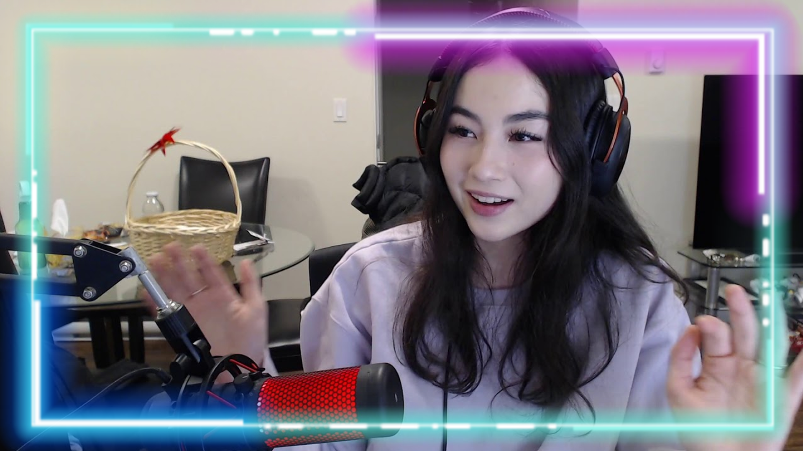
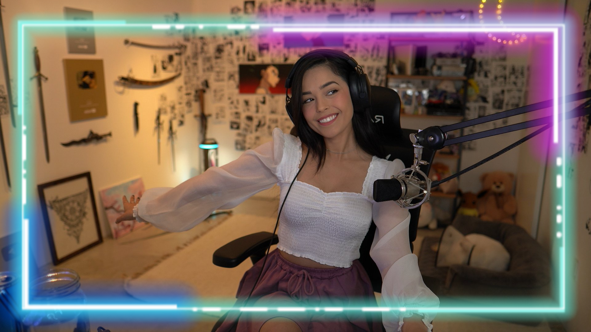

In a community that has flourished since the early 20th century, there lingers divide in those who are represented. Women in gaming constantly fight against prejudice in order to build a safe space for themselves. In a space completely dominated by men, their characters are constantly belittled and sexualized.
As a streamer, you are making yourself vulnerable to online viewers across the world. The pressure becomes more strenuous as you gain a larger audience because now your every action is being scrutinized
all sorts of people. This is the reality for streamers like Pokimane, Kyedae, and Valkyrae. As a woman live streamer, it is more common to find yourself reaching a barrier in how much you can grow. There is a common rhetoric spoken to diminish women's success in the industry: that they only profit off "simps" and use their "body" and "good looks" to gain an audience.Harassment can involve sexist insults or comments, death or rape threats, demanding sexual favors in exchange for virtual or real money, or criticism of the presence of women and their interests. In some cases, female players are also stalked, whether online or offline.
There is a long-held stereotype that men are simply better gamers than women. Women gamers are often perceived as incompetent players who aren’t genuinely interested in the games but rather sign up to get attention. If a female gamer does play well, she’s often derided as a hacker or is boosted – someone who cheats to gain an advantage – because “there is no way a girl can be that good.”